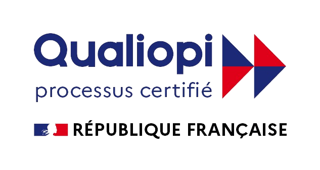

Présentation personnelle
Qui êtes-vous ? D'où venez-vous ?
Jour 1 Matin — Fondamentaux
Référentiel RS6982 — 3 jours / 24hFaisons connaissance, découvrez votre centre de formation et les objectifs des 3 jours à venir.
Qui êtes-vous ? D'où venez-vous ?
Quel est votre métier actuel ou votre projet professionnel ?
Avez-vous déjà piloté ? Avez-vous passé la formation A1/A3 ?
Qu'attendez-vous de cette formation ? Quels sont vos objectifs ?
▶ Voir la vidéo de présentation du centre


Assurer la sécurité lors de tous vos vols et atteindre le niveau exigé par la DGAC/EASA.
Lecture des cartes aéronautiques, analyse des risques et gestion de l'espace aérien.
AlphaTango, DroneKeeper, Géoportail et logiciels de pilotage professionnel.
QCM théorique, vol de contrôle et entretien oral pour valider vos compétences.
Découvrez les nombreux secteurs d'application du drone professionnel.

▶ Inspection Pont de Normandie · ▶ Modélisation Château de Beynes

▶ Inspection industrielle thermique · ▶ Inspection pylône télécom

▶ Modélisation 3D immobilière Paris · ▶ Mise en valeur immobilière


Les règles européennes et françaises encadrant l'exploitation des drones civils.
📄 Guide DSAC — Catégorie Ouverte (PDF)
·
📄 Guide DSAC — Catégorie Spécifique (PDF)
Vol en vue directe (VLOS) obligatoire. Hauteur max 120 m. Drones < 25 kg. Pas d'autorisation préalable (sauf cas spécifiques depuis 01/01/2026).
Scénarios STS-01 / STS-02, PDRA. Vol BVLOS possible. Déclaration ou autorisation requise. MANEX obligatoire.
Transport de personnes, marchandises dangereuses. Certification EASA du drone et de l'exploitant.

DJI Mini 5 Pro — C0/C1 < 900 g

DJI Matrice 4E — C2 < 4 kg

Drone C3/C4 — < 25 kg
| Cat. | Classes | Masse | Distance / Survol | Agglo public | Formation |
|---|---|---|---|---|---|
| A1 | C0, C1 | < 900 g | Survol isolé toléré | Oui (J-10) | A1/A3 en ligne |
| A2 | C2 | < 4 kg | 30 m (5 m basse vitesse) | Oui (J-10) | A1/A3 + A2 (BAPD) |
| A3 | C3, C4 | < 25 kg | 150 m zones résidentielles | Non | A1/A3 en ligne |
Agglomération
Article R. 110-2 du Code de la route
« Espace sur lequel sont groupés des immeubles bâtis rapprochés et dont l'entrée et la sortie sont signalées par des panneaux placés le long de la route qui le traverse ou qui le borde. »
→ Panneaux EB10 (entrée) / EB20 (sortie).
Zone peuplée (réglementation drone)
Définition DSAC — réglementation aéronautique
Un aéronef évolue en zone peuplée lorsqu'il vole :
Mise à jour 01/01/2026 — Arrêté du 23/12/2025 modifiant l'arrêté « espace » du 03/12/2020
Le survol de rassemblements de personnes est strictement interdit en catégorie Ouverte, quelle que soit la classe du drone.
Règlement (UE) 2019/947
| Type de voie | Cat. Ouverte | Règle / Autorité à contacter |
|---|---|---|
| 🚗 Route départementale / nationale | ⚠️ Toléré | Pas d'interdiction systématique. Mairie ou Préfecture si gêne ou risque (chute sur la chaussée). Règle du 1:1 vis-à-vis des véhicules (= tiers). |
| 🛣️ Autoroute | 🚫 Interdit | Survol et abords interdits sans autorisation du concessionnaire (Vinci, APRR, Sanef, ASF…) + Préfecture. Chute = risque vital pour les usagers. |
| 🚆 Voie ferrée (SNCF) | 🚫 Interdit | Bande de 50 m de chaque côté des voies = interdite sans accord SNCF Réseau. Protocole obligatoire pour vol BVLOS ou proximité voie active. |
| ⚓ Voie navigable / canal | ⚠️ Encadré | Autorité gestionnaire : VNF (Voies Navigables de France) pour canaux/fleuves, gestionnaire portuaire pour les ports. Hauteurs et distances à négocier. |
| ⚡ Lignes électriques HT | ⚠️ DMA | Distance Minimale d'Approche : 3 m (< 50 kV) ou 5 m (≥ 50 kV). Gestionnaires : RTE / Enedis. Risque d'arc électrique sans contact direct. |
| 📡 Pylônes / antennes télécom | ⚠️ Encadré | Accord opérateur (Orange, Free, Bouygues…). Interférences possibles GPS/RC à proximité immédiate. |
| Critère | 🇫🇷 Signalement français | 🇪🇺 Remote ID européen |
|---|---|---|
| Cadre légal | Loi 2016-1428 · Décret 2019-1114 · Arrêté 27/12/2019 | Règlements UE 2019/945 & 2019/947 · Norme EN 4709-002 |
| En vigueur depuis | 2020 | 01/01/2024 |
| Drones concernés | Tous drones ≥ 800 g opérés en France | Classes C1, C2, C3 en Ouverte + tous les drones en Spécifique |
| Technologie | Wi-Fi 2,4 GHz (~1 km) | Wi-Fi Direct et/ou Bluetooth (~300 m – 1 km) |
| Fréquence émission | Toutes les 3 s ou tous les 30 m | Continue (1 fois / seconde) |
| Identifiant émis | N° de série du drone | N° d'exploitant AlphaTango (format FRAxxx-xxx) |
| Données émises | Position drone, point de décollage, vitesse sol, route | N° série, position GPS, altitude, cap, vitesse, position pilote, statut d'urgence |
| Lecture | 🔒 Forces de l'ordre uniquement | 🌍 Tout le monde (apps : Drone Scanner, OpenDroneID) |
| Finalité | Détection des vols illicites en France | Transparence de l'espace aérien européen |
💡 Mémo : « 800 g 🇫🇷 (national) » · « Classe C 🇪🇺 (européen) » · les deux peuvent se cumuler.
Les deux systèmes sont indépendants et se cumulent. Un drone classe C2 ≥ 800 g opéré en France doit diffuser simultanément le signalement FR et le Remote ID EU. Les formats sont incompatibles — l'un ne remplace pas l'autre.
| Drone | Signalement 🇫🇷 | Remote ID 🇪🇺 |
|---|---|---|
| DJI Mini 4 Pro (C0, 249 g) | ❌ < 800 g | ❌ classe C0 |
| DJI Air 3 (C1, 720 g) | ❌ < 800 g | ✅ classe C1 |
| DJI Mavic 3 Pro (C2, > 900 g) | ✅ ≥ 800 g | ✅ classe C2 |
| Drone DIY 1,2 kg en Spécifique | ✅ ≥ 800 g | ✅ cat. Spécifique |
Exemples de calcul ALOS :
Mini 4 Pro (CD ≈ 0,31 m) → ALOS ≈ 327 × 0,31 + 20 = 121 m
Mavic 3 (CD ≈ 0,40 m) → ALOS ≈ 327 × 0,40 + 20 = 151 m
Matrice 350 RTK (CD ≈ 1,00 m) → ALOS ≈ 327 × 1,00 + 20 = 347 m
Code couleur des zones :
| Rouge — Vol interdit | |
| Orange foncé — 30 m max | |
| Orange clair — 50 m max | |
| Jaune — 60 m max | |
| Jaune clair — 100 m max | |
| Sans couleur — 120 m max (au-dessus interdit) |
⚠️ Référence de hauteur : les hauteurs maximales sont mesurées par rapport au point le plus haut de la piste de l'aérodrome, pas par rapport à votre point de décollage !
Calcul : Hutilisable = Hzone − (Altdécollage − Altpiste)
Ex : zone 50 m, piste à 50 m AMSL, décollage à 80 m AMSL
→ Hmax = 50 − (80 − 50) = 20 m AGL seulement !

⚠️ Carte INDICATIVE et INCOMPLÈTE
Outil d'aide à la décision uniquement. La responsabilité du télépilote reste entière : croiser systématiquement avec le SIA (NOTAM, AIP, AZBA) et les arrêtés préfectoraux locaux.
* Sauf conditions particulières publiées à l'arrêté « espaces » du 3 décembre 2020.